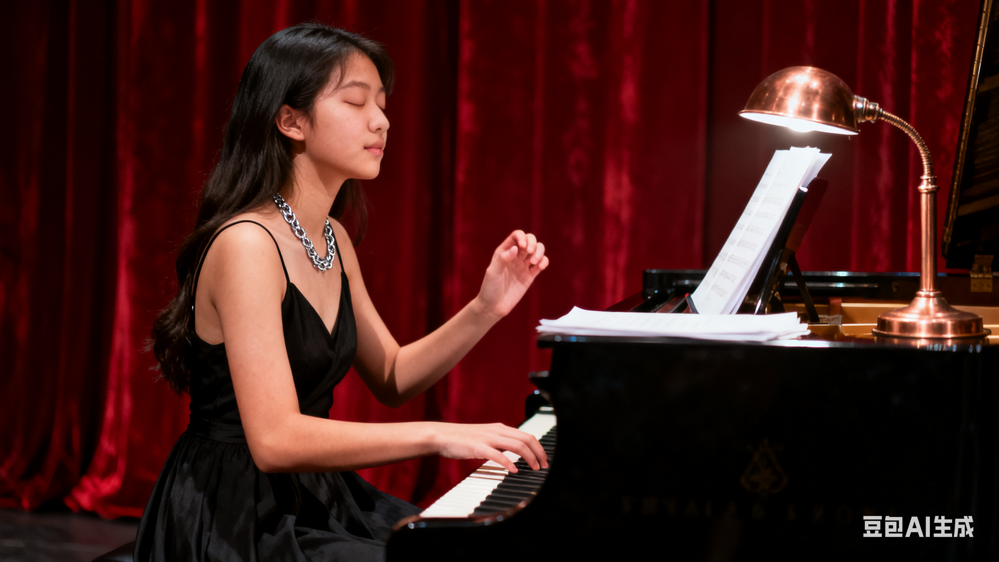

校园钢琴社团成立于 2010 年，至今已走过十余年时光， 累计吸纳社员 800 余人，是学校星级优秀社团。
社团下设 “基础教学部”“弹唱表演部”“指弹研习部”“乐队孵化部” 四大部门， 涵盖古典钢琴、电子琴等多种乐器学习与交流。
我们始终坚持 “零基础可学，有基础可展” 的理念，每周开展系统教学， 定期组织演出活动，让每位社员都能在音乐中收获成长、结识挚友，用钢琴弹奏属于青春的乐章。
为了让大家更好的了解钢琴社，本学期计划安排如下几项活动。 具体时间可能会根据学校统一安排略作调整，详情请关注社团通知。
| 钢琴社 2025 年春季学期活动安排表 | |||
|---|---|---|---|
| 活动名称 | 活动时间 | 活动地点 | 负责人 |
| 新成员见面会 | 3月第2周 周五晚 | 文渊C 421教室 | 王浩宇 |
| 钢琴基础教学公开课 | 3月第3周 周六下午 | 陈诺 | |
| 校园草地弹唱会 | 4月第2周 周日 | 操场中间草坪 | 王佳琪 |
| 期末专场音乐会 | 6月第1周 周六晚 | 文昌楼 大礼堂 | 杨明哲 |
上表仅列出了部分代表活动，日常还会有小型即兴演奏、 经验分享等活动，欢迎有想法、有创意的同学参与策划
社团成立以来，在各类活动中留下了诸多精彩瞬间： 2023 年 “校园文化节” 上，社团原创歌曲《青春和弦》斩获声乐类一等奖； 2024 年 “公益音乐节” 中，成员走进社区，用钢琴弹唱传递温暖，获当地媒体报道； 日常教学中，许多零基础成员经过一学期学习，成功在 “钢琴沙龙” 上完成独奏表演， 实现了从 “音乐小白” 到 “钢琴玩家” 的蜕变。
此外，社团还建立了线上作品库，收录成员的练习成果与原创作品，为大家提供展示与交流的线上平台。
在钢琴社团，不仅有音乐的碰撞，更有温暖的陪伴。
2022 级成员文岚入社时，因性格内向不敢上台表演，社团学长主动为她制定一对一练习计划， 鼓励她在小型沙龙中尝试展示。经过一学期的努力，文岚师姐不仅能熟练弹唱多首歌曲， 还在 2023 年 “冬日弦音” 音乐会上担任主唱，收获了满场掌声。 她说：“钢琴社团不仅教会我弹钢琴，更让我变得自信勇敢。”
类似的故事在社团中还有很多，在这里，大家因音乐相遇，因热爱同行，用琴弦编织着属于青春的美好回忆。
请认真填写以下信息，确保联系方式准确无误。 提交后，社团会通过电话或短信的方式通知面试时间。
提交表单后，如需修改信息，可以再次填写并提交